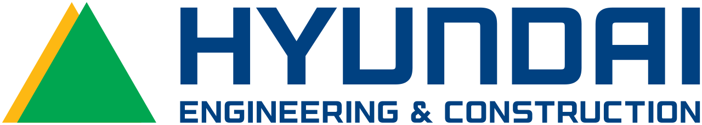

홈 > 브랜드 매거진 > 힐스테이트
힐스테이트
현대건설이 선보인 아파트 브랜드
산업 분야 브랜드·비즈니스 · 공개 등급 자료 기반 · 브랜드 평가 4 ★

한눈에 보는 브랜드
현대건설은 이전까지 '현대아파트'라는 회사명 중심 표기를 사용해왔으나, 2006년 다른 대형 건설사들의 독립 브랜드화 흐름에 맞춰 '힐스테이트'라는 별도 아파트 브랜드를 런칭했다. 이는 경쟁사 대비 다소 늦은 시점의 브랜드 전환이었다.
브랜드 아이덴티티
래미안, 자이 등 경쟁사가 먼저 독립 브랜드를 내세운 이후 현대건설이 뒤따라 브랜드를 전환한 것은, 아파트 브랜드화가 개별 기업의 선택이 아니라 업계 전체의 경쟁 압력에 의해 확산된 현상임을 보여준다. 후발주자로서 독립 브랜드 런칭을 통한 경쟁사 브랜드와의 포지셔닝 경쟁.
제품과 서비스
대표 제품과 서비스 정보는 편집 검수 후 공개됩니다.
타임라인
BI/CI 변천사
대표 로고대표 브랜드 마크함께 읽을 브랜드

브랜드·비즈니스 · 자료 기반현대건설현대건설(Hyundai E&C)은 1947년 설립된 한국의 대표 건설 기업으로, 현대그룹의 모태이자 현재는 현대자동차그룹 계열이다.
RA
래미안
브랜드·비즈니스 · 자료 기반래미안삼성물산이 선보인 프리미엄 아파트 브랜드
GX
GS자이
브랜드·비즈니스 · 자료 기반GS자이GS건설이 선보인 프리미엄 아파트 브랜드
EP
이편한세상
브랜드·비즈니스 · 자료 기반이편한세상대림산업(DL이앤씨)이 선보인 아파트 브랜드
 브랜드·비즈니스 · 자료 기반푸르지오
브랜드·비즈니스 · 자료 기반푸르지오대우건설이 선보인 아파트 브랜드
Be
Berg
브랜드·비즈니스 · 편집 검수Berg베르그는 음료 기업 라이언이 선보인 인공 색소·방부제를 넣지 않은 알코올 셀처로, 보다 세련된 대안을 찾는 음용자를 겨냥한 제품이다. 워터멜론, 레몬·유자, 블랙베리...
He
Helsinki
브랜드·비즈니스 · 편집 검수Helsinki핀란드 헬싱키 시는 2017년 도시 전체를 아우르는 통합 비주얼 아이덴티티를 새로 도입한다. 그 전까지 시의 여러 부서와 사업은 제각각의 로고와 표기를 사용했고, 일...
Is
Islington Square
브랜드·비즈니스 · 편집 검수Islington SquareIslington Square는 2024년에 기록된 Designed by DNCO 계열의 브랜드 아이덴티티 사례입니다. Campbell Hay가 아이덴티티 작업의 디...